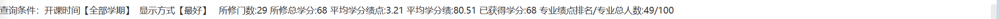
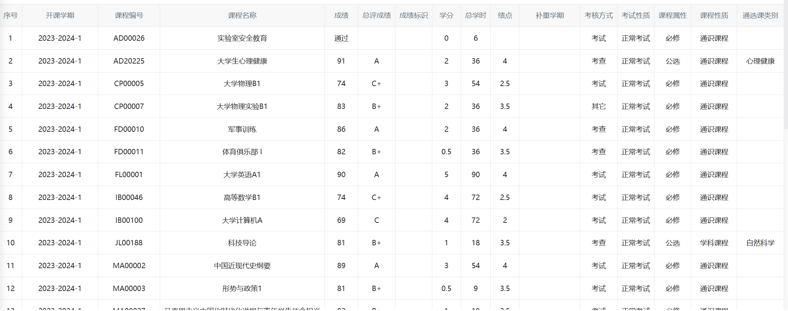
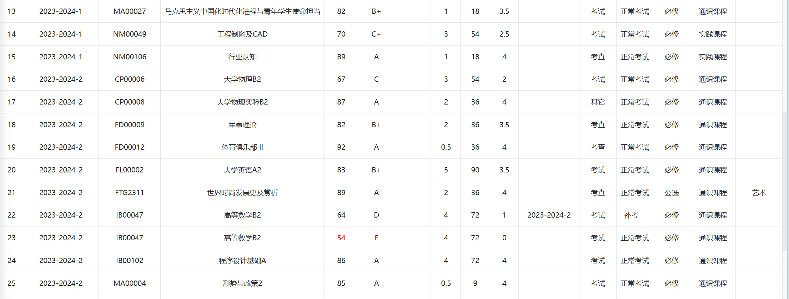
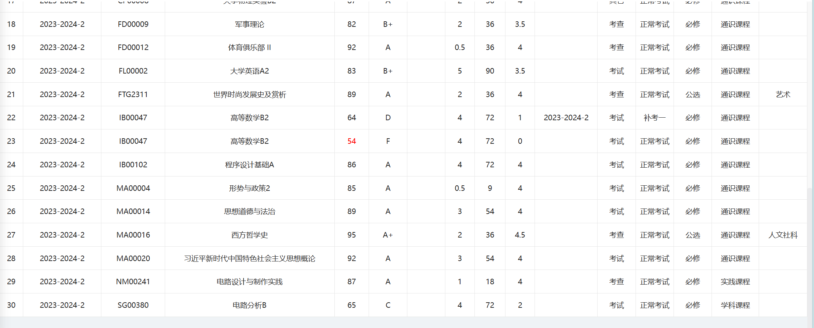

Welcome
Welcome to this website
男
来自23级光源一班
性格比较随和，学习成绩中等，但是对感兴趣的东西会不遗余力地实现
如果说有一些擅长的地方，大概在于solidworks建模，会些C,接触过Ansys的流体仿真（航模）
报名该高项的原因是，光电探测器件中有一种叫CMOS的传感器，是现代数码相机中的核心部件，我对它的制成方法及发展方向比较感兴趣，
同时比较喜欢与年轻老师沟通交流
以下是成绩，literally上学期挂了一科，希望这学期加油赶上
   